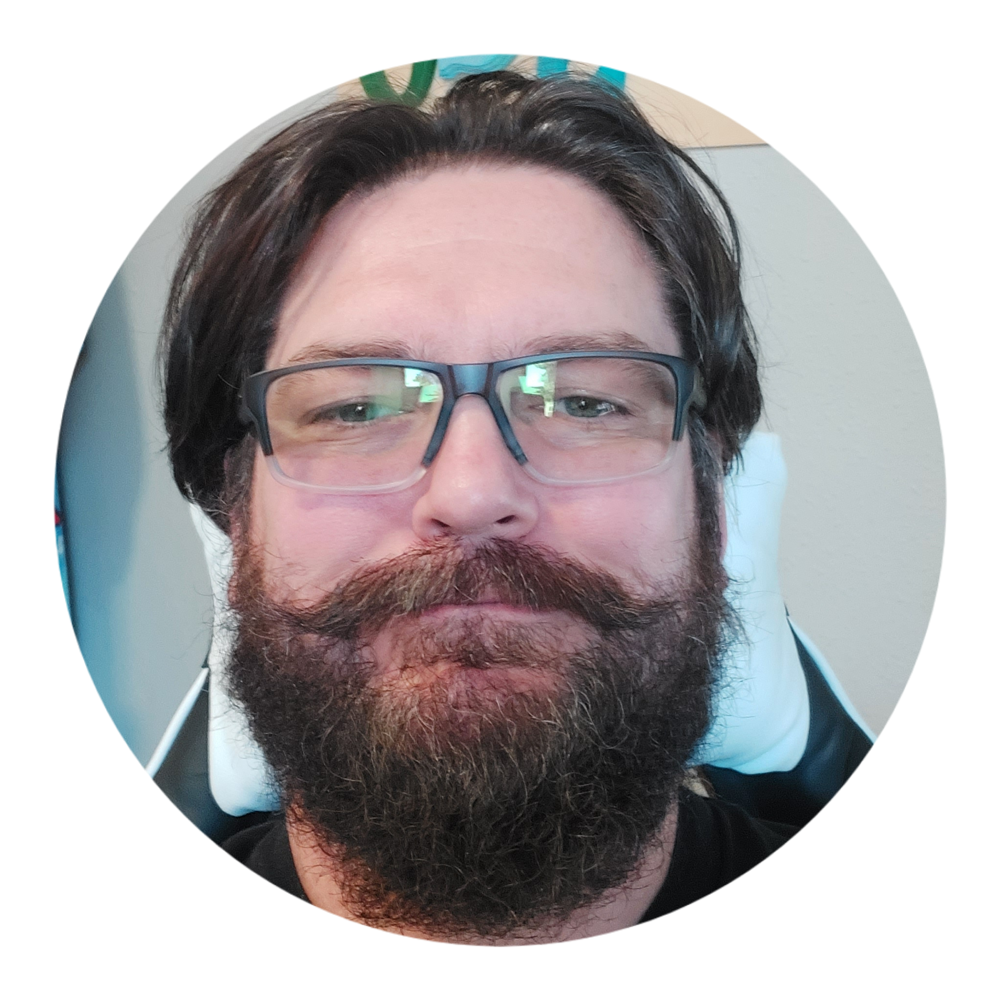

John Robertson's Resume

Contact Me
Hobbies and Interests
Summary:
I'm primarily a java developer who is actively learning new programming, web development, and DevOps skills, as well as any opportunity
to increase my knowledge and understanding of said fields. I am a U.S. Navy verteran and I have a Bachelor of Science in Information Technology
from the Oregon Institute of Technology. I enjoy solving problems, coding for large chunks of time, and that feeling you get when your code compiles.
Thank you for taking the time to look at my resume project.
Work History:
U.S. Bank (March 2019 - Current)
Associate Software Engineer
- Develop java software to calculate and balance banking totals
- Write software to generate reports for various banking totals and balances for Product Owners
- Write concise SQL queries to aid in the devopment of banking balances and totals programs and reports
- JUnit test creation for all new and updated code
- Participate in the Agile methodology and give opinions, suggestions, and feedback during meetings
- Promote a healthy professional team environment
- Create Jenkins jobs and pipelines to provide automated DevOps functionality and deploy our code base to test and production environments
- Maintain an OpenShift environment to run our banking applications
United States Navy (November 2010 – November 2014)
- Operate the Global Command and Control System (GCCS) to provide tactical information to all ships within the fleet
- Relay classified information to superior officers
- Lead a team of 15 junion personnel in completing routine tasks and ship maintenance
- Monitor, track, and relay the data of all vessels and crafts within our area of operation
Education:
Oregon Institute of Technology
Bachelor of Science in Information Technology - (Magna Cum Laude), 2018 – GPA: 3.84
Portland Community College
Associate of Applied Science in Computer Information Systems - (Highest Honors), 2016 – GPA: 4.0
Associate of Applied Science in CIS: Network Administration - (Highest Honors), 2016 – GPA: 3.95
Skills:
- Java Development
- SQL
- JUnit
- Jenkins
- Git
- Maven
- OpenShift
- Linux
- Agile Development
- Communication
- Team Player
- Attention to Detail
- html
Awards and Certifications: